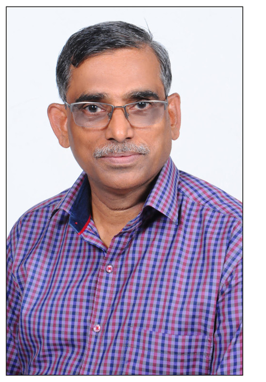

About Professor P. Ramamurthy
Professor P. Ramamurthy is known for his articulacy in teaching the fundamentals of sciences through simple words and as a pioneer in the field of photosciences and ultrafast spectroscopy in India. He is one among the initial pillars that strengthen the Department of Inorganic Chemistry in University of Madras. Along with Prof. P. Natarajan, he dedicated himself to establish the National Centre for Ultrafast Processes (NCUFP) with state of art facilities in Taramani (Chennai), which is unique of its kind and serves the researchers from different parts of our nation for the past 20 years. Students of Prof. P. Ramamurthy, Department of Inorganic Chemistry and NCUFP are immensely proud to honour this eminent scientist by organizing two days workshop on "Photoluminescence and functional materials". Prof. P. Ramamurthy was born in the year 1959 in Chennai. After his successful completion of school education in Chennai, he graduated his bachelors and masters degree from A.M.Jain College, Chennai and Loyola College, Chennai respectively. He completed his doctoral studies under the supervision of Prof. P. Natarajan, FASc., FNA, from the Department of Inorganic Chemistry, University of Madras in 1986. Soon after that, he started his academic career as a lecturer in the same Department in 1987. By 1992, he moved to Laboratoire de Photochimie Générale, France to carry out his post-doctoral work with Prof. Jean-Pierre Fouassier. Later, he returned to the parent Department and subsequently promoted as Reader and Professor of the Department of Inorganic Chemistry, University of Madras and again he visited the same laboratory as visiting scientist in the year 1996. He took charge as Head of the Department in the year 2014. During his academic tenure he has chaired many administrative positions in the University, viz., Director, NCUFP; Director, IQAC; Co-ordinator, DST – PURSE and RUSA 1.0. Currently he is co-ordinating the renovation and upgradation of the Prof. G. N. Ramachandran Instrumentation Centre which is being established as the Central Instrumentation Facility in the University of Madras. Prof. Ramamurthy is a renowned photochemist and has published more than 120 research publications in international and national peer reviewed journals. He has guided 21 Ph.D students and his research interest focuses on photophysics and photochemistry of organic molecules, Fluorescent Sensors, Ultrafast spectroscopy and functional nanomaterials. He has been awarded University Grants Commission ‘Career Award' in 1993 and ‘Bronze Medal' in 2002 by Chemical Research Society of India. He has been elected as a fellow of National Academy of Sciences, Allahabad. In 2004, he has been awarded Tamil Nadu Scientist Award (TANSA). He is a member of many professional bodies like, Chemical Research Society of India, Indian Society for Radiation and Photochemical Sciences and Indian Photobiology Society. He has delivered scientific talks in many international and national conferences. He has completed 12 research projects with financial support from different funding agencies like DST Young Scientist, DST-IRHPA, CSIR, UGC, DAE, ISRO, DST-SERC which has mobilized research grants to the tune of Rs. 625 lakhs to the University of Madras. He has initiated a new Masters programme in "Photonics and Bio photonics" with the financial support from University Grants Commission under Innovative Research and Teaching Programme. After 32 years of his perpetual activities, he is retiring from his service from Department of Inorganic Chemistry, School of Chemical sciences, University of Madras on 30th June 2019.
About the University
The University of Madras was established on 5th September 1857, with the motto "Doctrina Vim Promovel Insitam" meaning "learning promotes (one's) innate talent". This university is proudly celebration its 160 year of establishment as post centenary diamond Jubilee celebration in the year 2017-2018. It has given into large teaching-cum-affiliating University with 18 schools and 52 departments of post- graduate teaching and research 104 affiliated Colleges and 52 approved Research institutions by 2018. University of Madras is the mother of the all the old Universities of south India. The University of Madras has been accredited with “A” rating by National Assessment and Accreditation Council (NAAC). The University Grants Commission (UGC) has recognised the University as one of the centres for “Potential for excellence” in the country. DST has funded University of Madras under PURSE programme as two phases to the tune of 40.0 crores. MHRD-RUSA has funded Rs.20 crores for infrastructure grant and Rs.1.5 Crores for “Energy Materials” under research and innovation under phase 1.0. RUSA has further supported the University to the tune of Rs.50 Crores under RUSA 2.0.
About the Department
The Department of Inorganic Chemistry was established in the year 1976 under the Headship of Professor V.V.Ramanujam and succeeded by Professor P. Natarajan and Professor V. Durai. Master of Science Programme was introduced in the year 1976. The Department offers vibrant atmosphere to scholar to nurture the spirit of scientific inquiry and to pursue cutting edge research in highly encouraging environment. The faculty members of the Department have published as many as 500 papers in reputed National and International journals with good impact factors. Since the inception of the Department, 100 Research Scholars were awarded Ph.D. Degree and 10 scholars are currently undergoing research for their Ph.D. Degree and about 150 students were awarded M.Phil. Degree. The Department of Inorganic Chemistry has fully air-conditioned instrumentation rooms. There are three research laboratories with hi-tech facilities apart from the laboratory for the P.G. students.
About the Centre
National Centre for Ultrafast Processes was established in 1997 initially as a DST-IRHPA-National facility; the first of its kind for the use of researchers in academic institutions for time resolved emission and absorption studies in the ultrafast time scale. The vision of the centre is “Excellence in research based teaching and learning in photonics to provide skill and knowledge for independent learning”. The centre stands as a shining example of creation of an advanced research facility of multidisciplinary research in a state University which will have linkages with industry and national laboratories to create frontline technologies. The centre houses hi-tech laser facilities in the time resolution of nanosecond, picosecond and femtosecond to cater to the needs of Chemists, Physicists and Biologists UGC –identified this centre as “Innovative Centre” in 2004 and provides financial support for M.Sc., teaching programme on “Photonics and Bio photonics” from 2004 onwards.
About the Workshop
The objective of the workshop is to expose the young mind to the fundamentals of photoluminescence techniques, spectroscopic instrumentation, data analysis and functional materials. The following topic will be covered in the workshop in the form of invited lectures and hands-on training,
- Photoluminescence and FTIR spectroscopy
- Fluorescence anisotropy
- Fluorescence Imaging Techniques
- Time resolved photoluminescence Techniques
- Inorganic/Organic/Nano Functional Materials